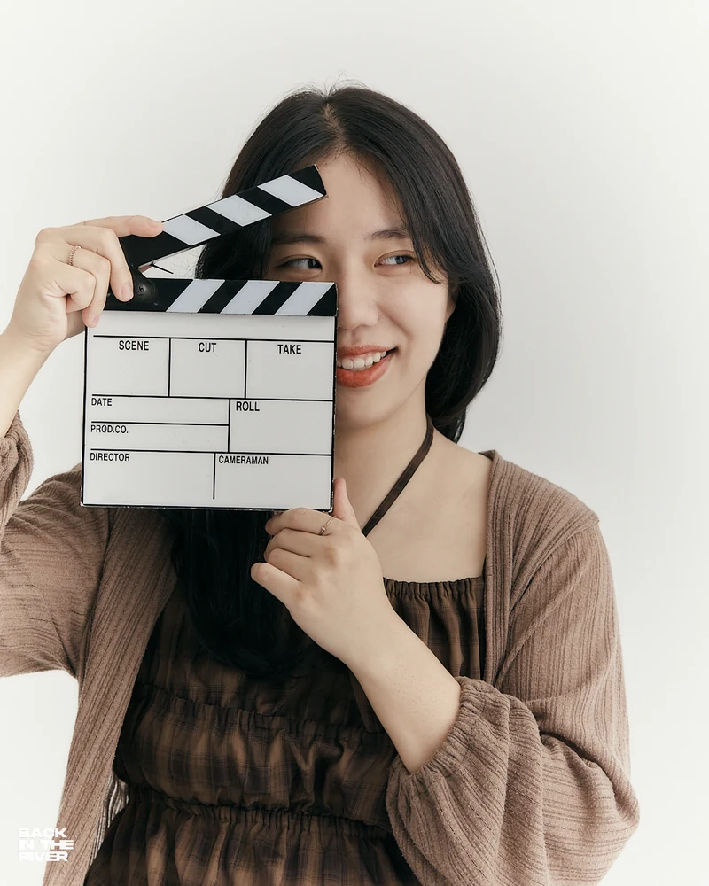

Introduction
Jiyeon Kim
Filmmaker
Jiyeon Kim (b. 1997, Seoul) is a filmmaker, scholar, and colorist working across memory. She earned her MFA in Film and Media Art from Emerson College and a dual BA in Film & Digital Media and Sociology from Dongguk University in Seoul.
Her work explores marginalized voices through narrative and experimental forms, often blurring the line between personal memory and collective history. Her first short film, Suddenly, Home, was supported by the Korean Film Council and screened at international film festivals. Her thesis film, Me: JFK, You: ICN, is a deeply personal story about trauma and healing, and premiered at Independent Film Festival Boston.
In addition to filmmaking, Jiyeon explores emotion and memory through tactile mediums such as embroidery and collage, creating mixed-media artworks that reflect personal and collective experiences.
Her versatile experience includes directing, cinematography, editing, and color work, as well as collaborations with global brands such as Samsung, Marvel, and Red Bull. She also worked as a videographer for SBS Digital News Lab, one of South Korea’s leading national broadcast networks. In 2026, she was selected for the Women In Film Fellowship as part of the Scholars & Activist cohort.
CONTACT
Jiyeon is always happy to respond to worldwide collaborations.
Feel free to contact if you want to talk about film, media, travel, etc.
Selected Filmography
Screenings & Festivals
World Culture Film Festival · Los Angeles
Haenam Cabbage · Official Selection.
Sokcho International Food Film Festival · Korea
Haenam Cabbage · Korean Short Section.
Incheon Independent Film Festival · Korea
Haenam Cabbage · Official Selection.
Indie Film Fest · Los Angeles
Semi-finalist recognition for Haenam Cabbage.
Big Shoulders International Student Film Festival · Chicago
Best Experimental Film winner for Il y a une mouche.
Berlin Lift-Off Film Festival · Germany
Jury's Choice for Suddenly, Home.
New York Film & Female Actress Award · NYC
Finalist for Suddenly, Home.
Recent Roles
Production Assistant · Asian Cinevision / AAIFF
Supported programming and production for the Asian American International Film Festival.
Distribution Intern · Splicer Films
Conducted festival research and devised creative distribution strategies and outreach.
Graduate Teaching Assistant · Emerson College
Assisted Advanced Cinematography and Foundation classes, organizing field shoots and post-production support.
Videographer · Emerson College
Produced institutional coverage including the Graduate Hooding Ceremony and faculty interviews.
Program Director · Design Studio A
Led video production and motion graphics for KOCIS and YouTube VOD campaigns.
Videographing PD · SBS Digital News Lab
Directed videography for "MMTG" (76M views across 53 episodes) and produced branded content for Samsung Semiconductor and Red Bull.